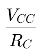
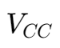
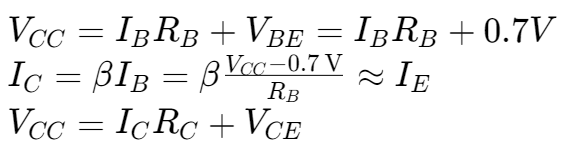

BJT DC Analysis
IC versus VCE
图像从左到右分别为：Saturation, Active, Breakdown
绘制负载线,,：
- 在 IC 轴上找到点 
- 在 VCE 轴上找到点 
- 将两点相连
负载线与图像的交点即晶体管的静态工作点,,。
四种 DC Biasing Configuration
Base Biasing

使用一个电阻 RB 连接在基极和电源 VCC 之间，基极电流由 RB 控制。

Collect Feedback Biasing


集电极通过一个反馈电阻 RC 连接到基极

Emitter Biasing

在发射极引入一个电阻 RE 和额外的电压降，利用负反馈稳定工作点。
Voltage Divider Biasing

基极通过分压电阻网络 R1 和 R2 偏置，提供稳定的基极电压。
BJT AC Analysis